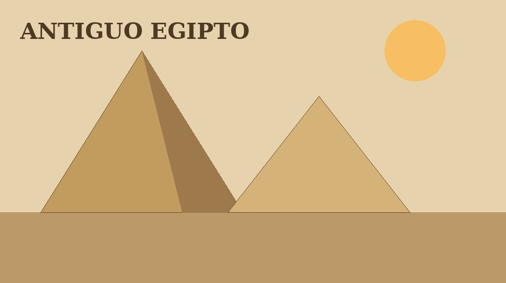
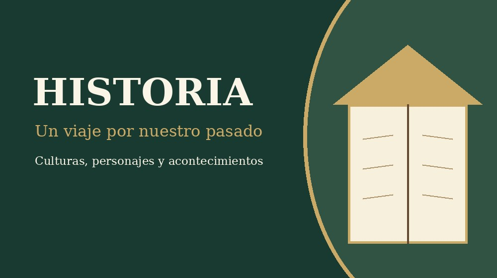
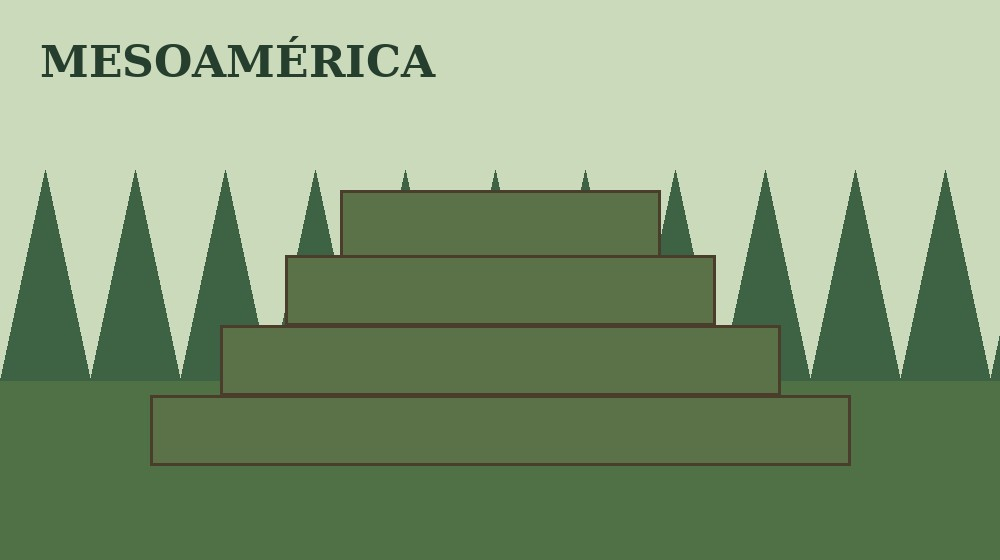
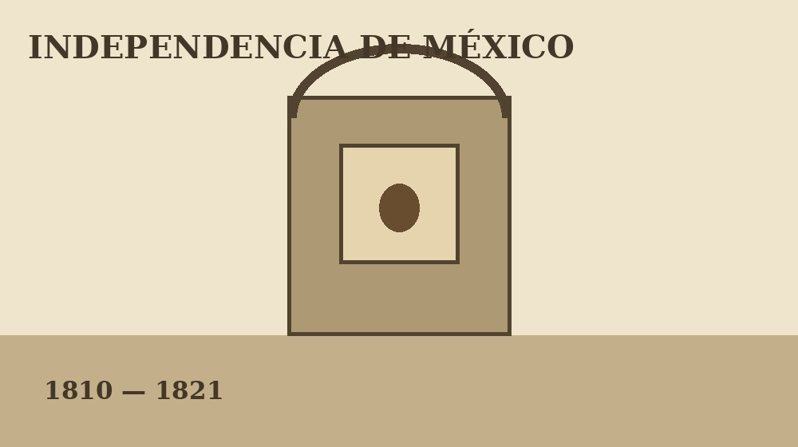
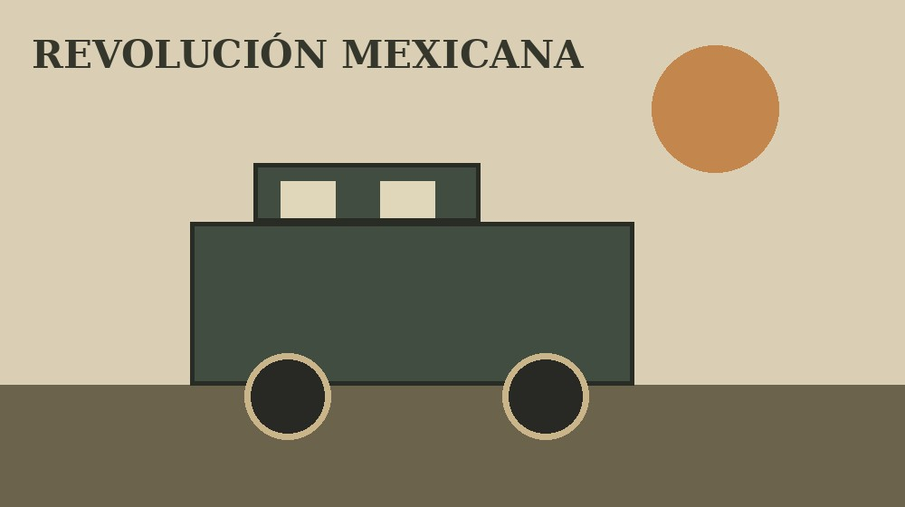

01 / ÁFRICA
Antiguo Egipto
Se desarrolló a orillas del río Nilo. Destacó por sus pirámides, escritura jeroglífica y conocimientos matemáticos.
Conocer másHISTORIA
Un viaje por nuestro pasado

CONOCE · COMPRENDE · APRENDE
Descubre civilizaciones, personajes y acontecimientos que transformaron nuestra sociedad.
Comenzar recorridoBIENVENIDO AL RECORRIDO
La Historia estudia los acontecimientos y procesos de las sociedades a través del tiempo. Nos permite conocer otras culturas, comprender cómo ha cambiado el mundo y reflexionar sobre nuestro presente.
UN RECORRIDO POR EL TIEMPO
Culturas que dejaron grandes aportaciones a la humanidad.

Se desarrolló a orillas del río Nilo. Destacó por sus pirámides, escritura jeroglífica y conocimientos matemáticos.
Conocer más
Fue una región cultural donde florecieron pueblos como los mayas y mexicas, con avances en agricultura y arquitectura.
Visitar el INAH
El movimiento comenzó en 1810 y terminó en 1821. Fue un proceso con distintas etapas y participantes.
Ver resumenNUESTRA HISTORIA
México tiene una historia amplia, formada por pueblos originarios, encuentros culturales, movimientos sociales y transformaciones políticas.

ORDENAR LOS ACONTECIMIENTOS
Consulta algunas fechas importantes y sus acontecimientos.
| Fecha | Acontecimiento | Periodo |
|---|---|---|
| 476 d. C. | Caída del Imperio romano de Occidente | Edad Media |
| 1521 | Caída de México-Tenochtitlan | Conquista |
| 1810 | Inicio de la Independencia de México | Siglo XIX |
| 1821 | Consumación de la Independencia | Siglo XIX |
| 1910 | Inicio de la Revolución Mexicana | Siglo XX |
APRENDE CON RECURSOS
Observa este recurso audiovisual para conocer más sobre este proceso histórico.
El video necesita conexión a internet para reproducirse.
COMPARTE TU OPINIÓN
Escribe cuál es tu tema histórico favorito.
Demostración escolar: el formulario muestra un mensaje, pero no envía ni guarda tus datos.